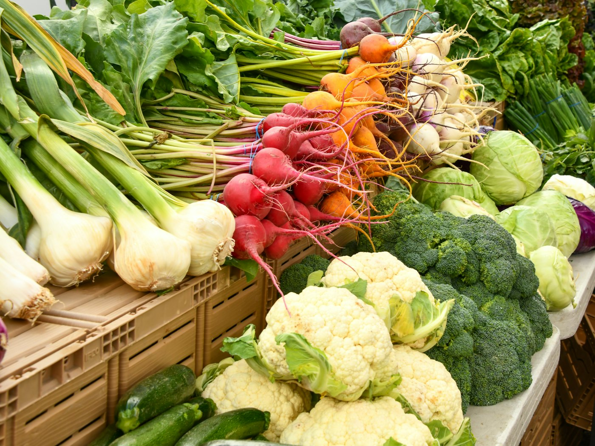

Percorso 1 di 5
Trattamento medico dell'obesità e del sovrappeso
L'obesità è una condizione clinica, non una colpa. Si affronta con un percorso medico.
In studioOnline
Per chi è
Per persone con obesità o sovrappeso che vogliono un percorso serio, con un medico, dopo diete che non hanno retto nel tempo.
Cosa facciamo
- Visita medica completa: storia clinica, esame obiettivo, misure, lettura degli esami e, se servono, nuovi accertamenti.
- Piano alimentare personalizzato costruito sulle tue giornate, con pasti che ti piacciono e ritmi compatibili con lavoro e famiglia.
- Controlli regolari per adattare il piano, leggere i nuovi esami e affrontare le difficoltà quando arrivano.
- Valutazione, quando indicato, di strumenti aggiuntivi: dieta chetogenica medica, terapia farmacologica o percorso bariatrico.
Cosa non prometto. Non prometto un numero di chilogrammi né tempi certi: prometto un percorso medico che segue te, non un calendario.